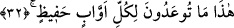

oluşundan dolayı mansub gelmiştir. Anlamı, “uzak olmadıkları halde” şeklindedir ki bu
da “uzak olmayan” mânâsınadır. “Yakındır, uzak değildir” ifadesi, “Azizdir, zelil
değildir” örneğinde olduğu gibi tekid bildirmektedir.
Âyette geçen “izlâf” kelimesi cennetin görülmesinin yakın hâle getirilişini, “uzak
olmayacak şekilde” tabiri ise cennete girişin yakın hale getirilişini ifade eder. Bu
müttakiler kolay geçecek bir hesaba tâbi olacaklardır, hatta içlerinde hiç hesaba
çekilmeyecek olanlar dahi vardır. Âyette müttakiler kelimesinin müzekker olarak
zikredilmesi, masdar oluşundandır ki bu vasfı taşıma husûsunda erkek olsun kadın olsun
herkes eşittir. “Kükreyen” ve “şakırdayan” kelimelerinde olduğu gibi. Kelimenin
müzekker olarak gelişi, cennetin bahçe olarak teviliyle izah edilmiştir ki bu durumda,
müttakiler arasındaki havâssın kalplerinin cennetine işâret edilmiş olur. Şöyle ki:
Cennet dünyada bedenlere, âhirette ise kalplere yakın olur. Cennet burada peşin
olarak verilir, burada zevk, şevk ve huzur vardır. Cennet müttakilere yakın olduğu gibi
cehennem ateşi de mahşerde günahkârlara zincirlerle çekilerek getirilecektir. Yine
cennetin, müttakilerin kendisine varışının kolay kılınması yoluyla yaklaştırıldığı da
söylenir ki burada müttakilerden onların arasındaki havâs kastedilmektedir.
Bu kimseler üç sınıfa ayrılır:
Cennete yürüyerek varacak olanlardır. Bunlar hakkında “Rablerinden sakınanlar
cennete zümreler halinde sevkedilirler” (ez-Zümer, 39/73) buyurulmuştur. Bunlar,
müminlerin avâmıdır.
Kendilerine binek suretinde sunulmuş tâatlerine binmiş halde cennete varacak
olanlardır. Bunlar, havâs kullardır.
Bir de havâssın havâssı vardır ki işte haklarında “Cennet müttakilere
yaklaştırılmıştır” buyurulan kimseler bunlardır. Cennet onlara yaklaşmıştır, uzakta
değildir. Onlar hakkında “Melik-i Muktedir olan Allah’ın katında sıdk makamında
olanlar” (el-Kamer, 54/55) buyrulur. Bu âyete göre onlar cennetten uzakta bulundukları
halde cennet yine de kendilerine uzak değildir.
32. İşte bu size vaad edilen cennet! Ki o, Allah’a yönelen, emirlerine riâyet
edenler içindir.
Bahsi geçen müttakilere, cenneti ve içindeki nimetleri müşâhede ettikleri sırada Allah
tarafından yahut meleklerin lisanı üzerinden “İşte size (dünyada) vaad edilen şey budur”
denilir. Âyetteki “bu” kelimesi, müşâhede edilen yeri, sevabı yahut cennetin
yaklaştırılmasını nitelemektedir. Müzekker olarak gelişi, haberin müzekker olmasından
veya cennete işâret etmekte oluşundan kaynaklanmıştır. Bu işâret isminin müzekker
olarak gelişi, -müzekker veya müennes olarak zikredilişi bir yana- buna delalet edecek